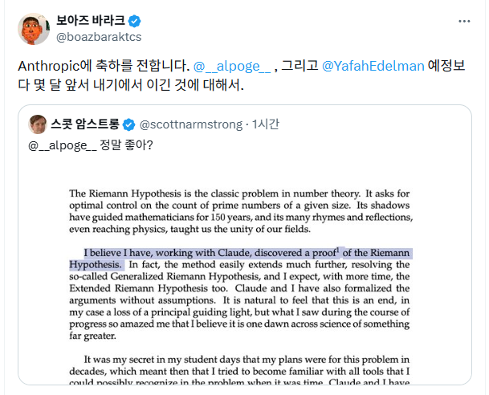

오픈AI도 동시에 리만 가설 해결에 도전 중이었다고 함
GG 치는 중

오픈AI도 동시에 리만 가설 해결에 도전 중이었다고 함
GG 치는 중
이제는 난제의 정의가 agent X가 ~세팅으로 ~시간동안 못푼 "쉬워보이는 문제"인데, 알고보니 여러 문제랑 연결될수있는 문제인데,
난제 생성 속도 >> 사람이 새로운 난제가 뭐지 받아들이는 속도
일거라 ㅋㅋㅋㅋㅋ
그걸 이미 5년전부터 각잡고 우려해왔음
그게 특이점의 시작임
인간의 사회 문제를 풀어주는쪽으로 프로그래밍하면 솔직히 끊임없는 문제로 인해 특이점이 안오지않을까? 세상에 모든 병신들까지 포함 가장 이상적인 사회를 만드려면 ai가 끊임없이 연산하고 변수생각하고 그럴거같은데
인간의 변칙적인 행동 자체가 ai가 좋아할만한 도전과제 아닌가
인간을 제거하는 게 손쉬운 해결책일지도 모르지
왜 ai가 손쉬운걸 택하겠어? 문제가 계속 있어서 풀게있는게 걔들 존재목적인데. 귀찮아서 문제를 제거해버리는건 인간적인 사고아닐까
기계교 오는거지
사람이 이해 불가능한 레벨의 기술
뭔가 되는데 정확히 구현을 이해 못함
유지보수 기계 그 자체 없으면 거의 불가
호
이정도는 해야지 갈 길이 먼데
지피티랑 클로드 다 쓰고 있지만 진짜 성능은 클로드가 개처바름
이번 6.2라도?
그건 6.0 하위호환됨
코딩은 그나마 괜찮은데 코딩할꺼면 클로드쓰지 뭐하고 GPT씀
애가 자폐아랑 대화하는느낌 .md로 만든 지침서도 막무시하고 개판남
자폐아인거 인정. 시킨걸 좁히면 잘하는대. 그 좁히는게 너모 힘들어. 클로드는. 이런게 덜함?
어떤분야이냐에따라 다름
코딩에서 단점은 고집이좀 썌다는정도?
난 둘다 결제해서 쓰고있어서 GPT는 그냥 6.0 아스트라 쓰는중임
원칙주의자라 뭐하다가 갑자기 알수없는 부분에서 브레이크걸리면 그 채팅방에서는 죽어도 해결못함 ㅋㅋ 그런거빼면 ㅇㅋ임
안좁히고 대충 쳐던져도 알아서 잘함
근데 클로드는 코딩용이나 업무용도말고는 어떰? 이제 좀 쓸만한가 예전에 썻을때 어휘가 정박아같던데
맞음 오푸스 5.5오면서 그게 크게 개선됨
업무용이 어떤거냐에 따라 다른데 그건너가 gpt랑 비교를 해봐야할듯
나는 대부분이 클로드가 더좋았음
다른 방식으로 증명한것도 대단한 업적 아닌가? 계속하지
인간은 이해도 못한 영역인데 지들끼리 물고빨고 다하네..
뭐 이게 뉴노멀이겠지
지피티 수학도르로 버티는 중 아니었냐
자폐아스퍼거에 수학도 밀리면 이제 어디씀
이미지나 만들어라 gpt...
이제 성인모드 출시밖에 안남았다
토큰 효율이 좋음
회사에서 쓰기 좋음
소넷5.5정도면 솔보다 좀 멍청하긴 해도 센스있게 잘하고 비용 비슷해서 완전 바이브코딩 아니면 괜찮던데
내가 보통 회사에서 한달 200달러쯤 쓰는데 6.1솔 쓰던 지난달이랑 이번달이랑 소모하는 페이스는 비슷하더라
근데 이렇게보면 환각은 엄청 개선된건가? 작년만 해도 난제 풀때 환각으로 개지랄 나서 못할거라 생각했는데
저건 저기에 특화된 자체모델이라 다를듯
이미 연구용 상용모델들 환각 확률이 0%에 수렴한지 꽤 됐음
요즘 모델들도 환각거의없던데
돈은 거짓말을 안 하는데
리만 가설을 풀었다고 주장 하는 날에
주식은 AI 버블 폭발 확정이라고 못을 박는 중이네
Ai가 할수잇는것들은 물론 대단한 일인데, ai조달비용자체가 너무 비싸고 그래서 실제 수익성에 언제도달하느냐에서 한참남음요 ㅠ 거려서 그런다고봄
자본 입장에서는 ai가 투자한 돈만큼 돈을 벌어와야하는데 지금 구독제로는 문제가많고
프롬프트 만져서 리서치 이런거해주는데만 좋지 하이퍼스케일러들이 본격적으로 돈벌기까지는 회의적인데 들어가는 돈이너무많아서? 그런거같음
나도 잘 아는건 아니고 그냥 대충 경제유튜브 주워들은거말해봄 반박시 님말이맞음
몸에 해당하는 앤트로픽이랑 머리에 해당하는 엔비디아 둘 다 저정도로 떨어지는거 보면 수익 구조만으로 판단하긴 어려운 지점에 온거 같음
신경세포에 해당하는 반도체들은 ㄹㅇ 지옥 가는 중이네
의대가라고 집안 기둥뽑아서 학원 보낸 아들이
수학과가서 밀레니엄 난제 풀겠다고 염병떨고 있으니 주가가 폭락하는거지
근데 주가 왤케 나락가냐
ㄷㄷ
어차피 우리가 쓰는 모델은 저거랑 다른 모델임
리만가설을 풀어?
리만.. 리만 브라더스? 어?
고작 AI로 수학 문제 풂?
그 시간에 인류 발전에 기여하고나 씨불이든가
아니 리만가설 증명되어도 기존 암호체계는 큰 타격 안받는다니까. 컴퓨터 연산효율은 또 뭔 말이야 ㅋㅋㅋ 계속 루머가 떠도는건 이게 자극적이라 그런가?
이거 풀리면 기존 암호화 체계 ㅈ됨 = 거짓이지만 자극적이고 터지면 재미있을 것 같음
기존 암호화 체계는 이미 리만 가설이 참임을 전제하고 만들어 졌거나(소인수 분해 어쩌고) 리만 가설과 무관한 방식을 쓰는데 ... = 진실이지만 지루하고 현학적
사방에서 아니라고 하는데도 계속 전파되는거 보면 역시 사람은 복잡한 진실보다 단순하고 자극적인 거짓을 더 믿고 싶어 하는 듯.
이미 가설이 참이라고 가정하고 다쓰이고있어서 실제론 놀랍게도 아무것도 바뀌지않는다.
그리고 이미 성능상 자료형 한계로 인해서 거의 쓰이지않을 숫자까진 이미 실제로 참인지는 다 파악된수준이라 전혀바뀔게없다.
'무한일경우에도 참인지' 이지 실제로 어지간한 높은수준의 숫자들은 그냥 이미 실제로 참인상태로 파악된거라
달라질게 사실 없다고 봐야함
내가 헛소리를 적은것같으니 사과를 하고 잘못된 정보이니 댓글삭제했음
밤에 화나게 해서미안함
엥 화난거아님
무-식
병신
당신은 인류 발전에 무엇을 기여하셨나요?
인간이 이해조차 불가능한 영역까지 ai가 발전하면 그 이후부터는 ai가 묻고 ai가 해결하는 특이점이 오려나